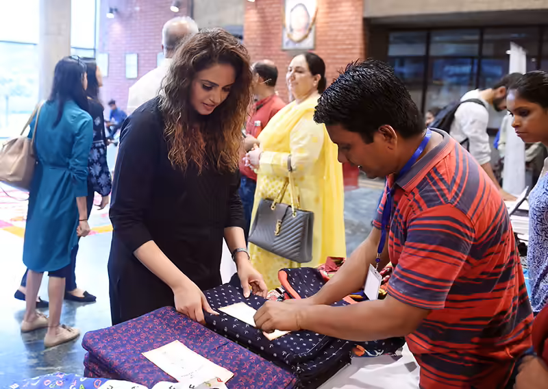
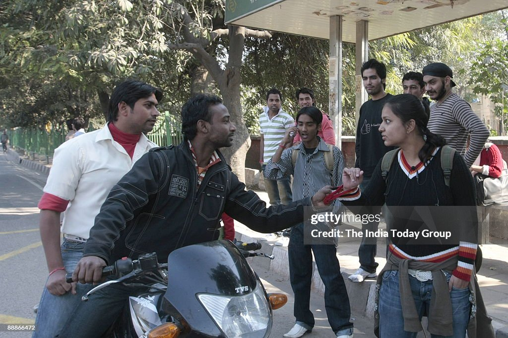

  <section class="ngo-press-wrapper">
    <div class="container">
      <div class="ngo-team-header">
        <span class="heading-badge">News & Updates</span>
        <h2 class="ngo-team-title title-heading">Media Centre</h2>
        <p class="ngo-team-subtitle">
         Stay updated with our latest news, events, and media coverage.
        </p>
      </div>
      <h2 class="title-heading">Latest Press Releases</h2>

      <!-- Card 1 -->
      <div class="ngo-press-card">
        
        <div class="ngo-press-content">
          <div class="ngo-press-meta">
            <span class="ngo-press-date">Jun 7, 2018</span>
            <span class="ngo-press-badge media">Media Coverage</span>
            <!-- <span class="ngo-press-badge release">Press Release</span> -->
          </div>

          <h3 class="ngo-press-heading">
           Huma Qureshi attended the annual day celebration of NGO Jamghat at Shri Ram Centre For Performing Arts in Delhi.
          </h3>

          <p class="ngo-press-desc">
            Huma Qureshi watch play performed by students with her parents Ameena Saleem Qureshi and Saleem Qureshi during NGO Jamghat's...
          </p>

          <a class="ngo-press-link">
            Read Full Release →
          </a>
        </div>
      </div>

      <!-- Card 2 -->
      <div class="ngo-press-card">
        

        <div class="ngo-press-content">
          <div class="ngo-press-meta">
            <span class="ngo-press-date"> DECEMBER 24</span>
            <span class="ngo-press-badge release">Press Release</span>
            <!-- <span class="ngo-press-badge media">Media Coverage</span> -->
          </div>

          <h3 class="ngo-press-heading">
            Jamghat Volunteers stage an invisible theatre skit on sexual harassment in Delhi
          </h3>

          <p class="ngo-press-desc">
            Jamghat Volunteers stage an invisible theatre skit on sexual harassment in Delhi, India ( Members of Jamghat staging an Invisible theatre performing, There is a motley group of people at a bus stop. 
          </p>

          <a class="ngo-press-link">
            Read Full Release →
          </a>
        </div>
      </div>
    </div>

  </section>
